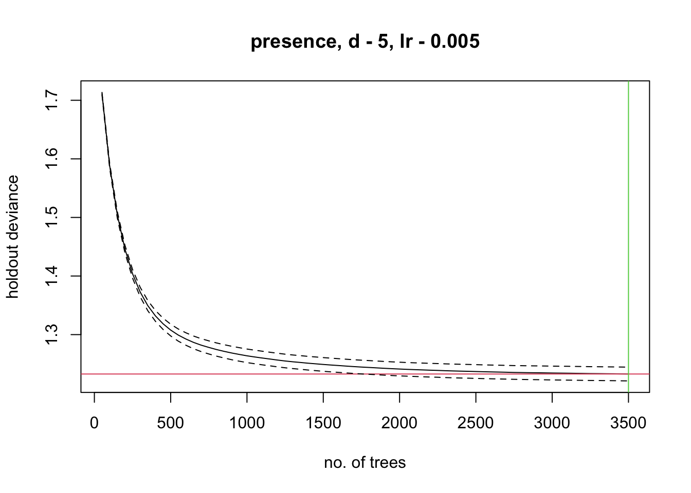
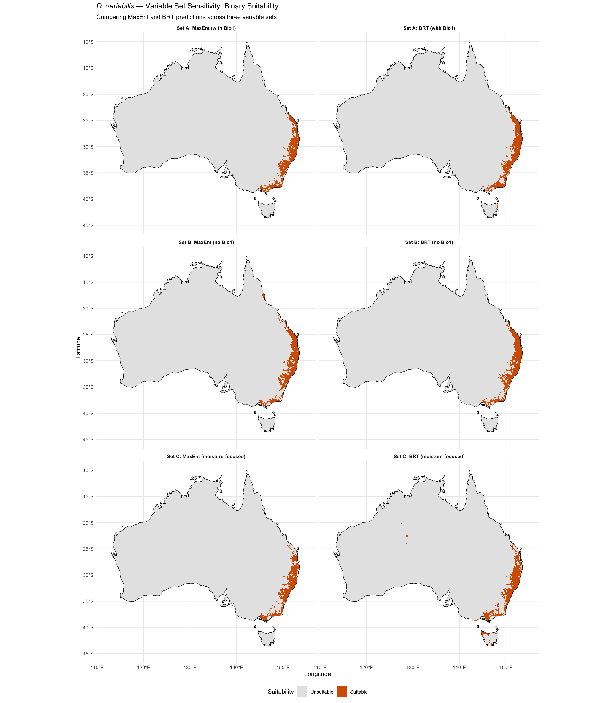

library(tidyverse)
library(terra)
library(ENMeval)
library(rJava)
library(dismo)
library(gbm)
library(sf)
library(rnaturalearth)
library(rnaturalearthdata)
library(ecospat)Step 5c: Sensitivity Models — Alternative Variable Sets
Dermacentor variabilis Species Distribution Model
Overview
This script refits MaxEnt and BRT models using alternative variable sets defined in Step 4b, then projects to Australia and compares with the original models. The goal is to test whether removing Bio1 (and Bio7) improves model agreement and produces more ecologically plausible Australian projections.
Variable sets:
- Set B (no Bio1): bio5, bio7, bio10, bio12, bio15, aridity_idx, PET_seasonality
- Set C (moisture-focused): bio5, bio10, bio12, bio15, aridity_idx, PET_seasonality, vpd_annual
All model settings are identical to the original analysis to ensure comparability.
1. Load data
base_dir <- "~/Library/CloudStorage/OneDrive-CSIRO/OneDrive - Docs/01_Projects/SDM/Dvariabilis_SDM"
processed_dir <- file.path(base_dir, "processed_data")
figures_dir <- file.path(base_dir, "figures")
# Occurrence and background data
occ_env <- readRDS(file.path(processed_dir, "occurrences_with_env.rds"))
bg_env <- readRDS(file.path(processed_dir, "background_with_env.rds"))
occ_coords <- occ_env %>% dplyr::select(decimalLongitude, decimalLatitude)
bg_coords <- bg_env %>% dplyr::select(decimalLongitude = lon, decimalLatitude = lat)
# Variable sets
set_B <- readLines(file.path(processed_dir, "selected_variables_setB.txt"))
set_C <- readLines(file.path(processed_dir, "selected_variables_setC.txt"))
# Environmental stacks
env_B_M <- rast(file.path(processed_dir, "env_setB_M.tif"))
env_B_aus <- rast(file.path(processed_dir, "env_setB_aus.tif"))
env_C_M <- rast(file.path(processed_dir, "env_setC_M.tif"))
env_C_aus <- rast(file.path(processed_dir, "env_setC_aus.tif"))
# Original models and thresholds for comparison
orig_thresholds <- readRDS(file.path(processed_dir, "model_thresholds.rds"))
orig_set <- readLines(file.path(processed_dir, "selected_variables.txt"))
# Australia boundary
aus <- ne_countries(country = "Australia", scale = "medium", returnclass = "sf")
cat("Set B:", paste(set_B, collapse = ", "), "\n")
cat("Set C:", paste(set_C, collapse = ", "), "\n")Set B: aridity_idx, bio12, bio15, bio7
Set C: bio5, bio10, bio12, bio15, aridity_idx, PET_seasonality, vpd_annual 2. Function to fit and evaluate a complete model set
fit_maxent <- function(occ_coords, bg_coords, env_stack, set_name) {
cat(sprintf("\n=== Fitting MaxEnt for %s ===\n", set_name))
set.seed(7990)
enmeval_results <- ENMevaluate(
occs = occ_coords,
envs = env_stack,
bg = bg_coords,
algorithm = "maxent.jar",
partitions = "block",
tune.args = list(
fc = c("L", "LQ", "LQH"),
rm = c(1, 1.5, 2, 3, 4, 5)
),
doClamp = TRUE,
parallel = TRUE,
numCores = 4
)
# Multi-criteria model selection (same as original)
results <- enmeval_results@results %>%
mutate(auc.diff = auc.train - auc.val.avg,
delta.AICc = AICc - min(AICc, na.rm = TRUE))
auc_thresh <- 0.1
candidates <- results %>% filter(auc.diff < auc_thresh)
if (nrow(candidates) == 0) {
auc_thresh <- 0.15
candidates <- results %>% filter(auc.diff < auc_thresh)
}
best_AICc <- min(candidates$AICc, na.rm = TRUE)
selected_row <- candidates %>%
filter(AICc <= best_AICc + 2) %>%
arrange(ncoef, AICc) %>%
slice(1)
selected_key <- paste0("fc.", selected_row$fc, "_rm.", selected_row$rm)
model <- enmeval_results@models[[selected_key]]
var_imp <- enmeval_results@variable.importance[[selected_key]]
cat(sprintf("Selected: fc=%s, rm=%s, AUC_train=%.3f, AUC_val=%.3f, ncoef=%d\n",
selected_row$fc, selected_row$rm,
selected_row$auc.train, selected_row$auc.val.avg,
selected_row$ncoef))
list(model = model, enmeval = enmeval_results, metadata = selected_row,
var_imp = var_imp)
}
fit_brt <- function(occ_env, bg_env, vars, set_name) {
cat(sprintf("\n=== Fitting BRT for %s ===\n", set_name))
pres_data <- occ_env %>% dplyr::select(all_of(vars)) %>% mutate(presence = 1)
bg_data <- bg_env %>% dplyr::select(all_of(vars)) %>% mutate(presence = 0)
brt_data <- bind_rows(pres_data, bg_data)
n_pres <- sum(brt_data$presence == 1)
n_bg <- sum(brt_data$presence == 0)
brt_data$weights <- ifelse(brt_data$presence == 1, n_bg / n_pres, 1)
pred_cols <- which(names(brt_data) %in% vars)
set.seed(42)
model <- gbm.step(
data = as.data.frame(brt_data),
gbm.x = pred_cols,
gbm.y = which(names(brt_data) == "presence"),
family = "bernoulli",
tree.complexity = 5,
learning.rate = 0.005,
bag.fraction = 0.75,
n.folds = 10,
site.weights = brt_data$weights,
verbose = FALSE
)
if (is.null(model) || model$n.trees < 1000) {
cat("Reducing learning rate to 0.001...\n")
set.seed(42)
model <- gbm.step(
data = as.data.frame(brt_data),
gbm.x = pred_cols,
gbm.y = which(names(brt_data) == "presence"),
family = "bernoulli",
tree.complexity = 5,
learning.rate = 0.001,
bag.fraction = 0.75,
n.folds = 10,
site.weights = brt_data$weights,
verbose = FALSE
)
}
cat(sprintf("BRT: %d trees, CV deviance = %.4f\n",
model$n.trees, model$cv.statistics$deviance.mean))
model
}
evaluate_models <- function(maxent_model, brt_model, occ_env, bg_env, vars) {
occ_vals <- occ_env %>% dplyr::select(all_of(vars))
bg_vals <- bg_env %>% dplyr::select(all_of(vars))
# MaxEnt predictions
me_pres <- predict(maxent_model, occ_vals, type = "cloglog")
me_bg <- predict(maxent_model, bg_vals, type = "cloglog")
# BRT predictions
brt_pres <- predict(brt_model, as.data.frame(occ_vals),
n.trees = brt_model$n.trees, type = "response")
brt_bg <- predict(brt_model, as.data.frame(bg_vals),
n.trees = brt_model$n.trees, type = "response")
# AUC
calc_auc <- function(pres, bg) {
n_p <- length(pres); n_b <- length(bg)
sum(sapply(pres, function(p) sum(p > bg) + 0.5 * sum(p == bg))) / (n_p * n_b)
}
# Boyce index
me_boyce <- ecospat.boyce(c(me_pres, me_bg), me_pres, nclass = 0, PEplot = FALSE)
brt_boyce <- ecospat.boyce(c(brt_pres, brt_bg), brt_pres, nclass = 0, PEplot = FALSE)
# Thresholds (MaxSS)
find_maxss <- function(pres, bg) {
all_pred <- c(pres, bg)
all_obs <- c(rep(1, length(pres)), rep(0, length(bg)))
thresholds <- seq(0, 1, by = 0.001)
best <- list(threshold = 0, tss = -1, sens = 0, spec = 0)
for (t in thresholds) {
pred_bin <- all_pred >= t
tp <- sum(pred_bin & all_obs == 1)
fn <- sum(!pred_bin & all_obs == 1)
tn <- sum(!pred_bin & all_obs == 0)
fp <- sum(pred_bin & all_obs == 0)
sens <- tp / (tp + fn)
spec <- tn / (tn + fp)
tss <- sens + spec - 1
if (tss > best$tss) best <- list(threshold = t, tss = tss, sens = sens, spec = spec)
}
best
}
# Prediction correlation
cor_pres <- cor(me_pres, brt_pres, method = "spearman")
cor_bg <- cor(me_bg, brt_bg, method = "spearman")
me_maxss <- find_maxss(me_pres, me_bg)
brt_maxss <- find_maxss(brt_pres, brt_bg)
list(
maxent_auc = calc_auc(me_pres, me_bg),
brt_auc = calc_auc(brt_pres, brt_bg),
maxent_boyce = me_boyce$cor,
brt_boyce = brt_boyce$cor,
maxent_threshold = me_maxss,
brt_threshold = brt_maxss,
pred_cor_pres = cor_pres,
pred_cor_bg = cor_bg
)
}3. Fit Set B models
maxent_B <- fit_maxent(occ_coords, bg_coords, env_B_M, "Set B")
brt_B <- fit_brt(occ_env, bg_env, set_B, "Set B")
eval_B <- evaluate_models(maxent_B$model, brt_B, occ_env, bg_env, set_B)
=== Fitting MaxEnt for Set B ===
Selected: fc=LQH, rm=1, AUC_train=0.848, AUC_val=0.828, ncoef=104
=== Fitting BRT for Set B ===
GBM STEP - version 2.9
Performing cross-validation optimisation of a boosted regression tree model
for presence and using a family of bernoulli
Using 14535 observations and 4 predictors
creating 10 initial models of 50 trees
folds are stratified by prevalence
total mean deviance = 1.8989
tolerance is fixed at 0.0019
now adding trees...
BRT: 3500 trees, CV deviance = 1.23284. Fit Set C models
maxent_C <- fit_maxent(occ_coords, bg_coords, env_C_M, "Set C")
brt_C <- fit_brt(occ_env, bg_env, set_C, "Set C")eval_C <- evaluate_models(maxent_C$model, brt_C, occ_env, bg_env, set_C)
=== Fitting MaxEnt for Set C ===
Selected: fc=LQH, rm=1, AUC_train=0.848, AUC_val=0.833, ncoef=145
=== Fitting BRT for Set C ===
GBM STEP - version 2.9
Performing cross-validation optimisation of a boosted regression tree model
for presence and using a family of bernoulli
Using 14535 observations and 7 predictors
creating 10 initial models of 50 trees
folds are stratified by prevalence
total mean deviance = 1.8989
tolerance is fixed at 0.0019
now adding trees...
BRT: 4300 trees, CV deviance = 1.22735. Project to Australia
# Set B projections
pred_B_maxent <- terra::predict(env_B_aus, maxent_B$model, type = "cloglog", clamp = TRUE)
pred_B_brt <- terra::predict(env_B_aus, brt_B, n.trees = brt_B$n.trees,
type = "response", na.rm = TRUE)
# Set C projections
pred_C_maxent <- terra::predict(env_C_aus, maxent_C$model, type = "cloglog", clamp = TRUE)
pred_C_brt <- terra::predict(env_C_aus, brt_C, n.trees = brt_C$n.trees,
type = "response", na.rm = TRUE)
# Binary maps
B_maxent_binary <- pred_B_maxent >= eval_B$maxent_threshold$threshold
B_brt_binary <- pred_B_brt >= eval_B$brt_threshold$threshold
C_maxent_binary <- pred_C_maxent >= eval_C$maxent_threshold$threshold
C_brt_binary <- pred_C_brt >= eval_C$brt_threshold$threshold
sprintf("Projections complete")[1] "Projections complete"6. MESS for alternative variable sets
# Reference data
ref_data <- bind_rows(
occ_env %>% dplyr::select(all_of(names(occ_env) %>% intersect(c(set_B, set_C, "decimalLongitude", "decimalLatitude")))),
bg_env %>% dplyr::select(all_of(names(bg_env) %>% intersect(c(set_B, set_C, "lon", "lat"))))
)
# MESS for Set B
ref_B <- bind_rows(
occ_env %>% dplyr::select(all_of(set_B)),
bg_env %>% dplyr::select(all_of(set_B))
)
mess_B <- mess(raster::stack(env_B_aus), as.data.frame(ref_B))
mess_B <- rast(mess_B)
mess_B_vals <- values(mess_B, na.rm = TRUE)
pct_novel_B <- round(100 * sum(mess_B_vals < 0) / length(mess_B_vals), 1)
# MESS for Set C
ref_C <- bind_rows(
occ_env %>% dplyr::select(all_of(set_C)),
bg_env %>% dplyr::select(all_of(set_C))
)
mess_C <- mess(raster::stack(env_C_aus), as.data.frame(ref_C))
mess_C <- rast(mess_C)
mess_C_vals <- values(mess_C, na.rm = TRUE)
pct_novel_C <- round(100 * sum(mess_C_vals < 0) / length(mess_C_vals), 1)
sprintf("MESS novelty — Set B: %.1f%% | Set C: %.1f%%", pct_novel_B, pct_novel_C)[1] "MESS novelty — Set B: 13.0% | Set C: 16.6%"7. Calculate suitable areas
cell_areas <- cellSize(B_maxent_binary, unit = "km")
aus_total <- sum(values(cell_areas * !is.na(B_maxent_binary)), na.rm = TRUE)
calc_area <- function(binary_raster, cell_areas) {
sum(values(cell_areas * binary_raster), na.rm = TRUE)
}
# Set B areas
B_maxent_area <- calc_area(B_maxent_binary, cell_areas)
B_brt_area <- calc_area(B_brt_binary, cell_areas)
B_maxent_mess_area <- calc_area(B_maxent_binary * (mess_B >= 0), cell_areas)
B_brt_mess_area <- calc_area(B_brt_binary * (mess_B >= 0), cell_areas)
# Set C areas
C_maxent_area <- calc_area(C_maxent_binary, cell_areas)
C_brt_area <- calc_area(C_brt_binary, cell_areas)
C_maxent_mess_area <- calc_area(C_maxent_binary * (mess_C >= 0), cell_areas)
C_brt_mess_area <- calc_area(C_brt_binary * (mess_C >= 0), cell_areas)
# Prediction correlations on Australian projections
B_aus_cor <- cor(values(pred_B_maxent, na.rm = TRUE),
values(pred_B_brt, na.rm = TRUE),
method = "spearman", use = "complete.obs")
C_aus_cor <- cor(values(pred_C_maxent, na.rm = TRUE),
values(pred_C_brt, na.rm = TRUE),
method = "spearman", use = "complete.obs")
sprintf("Australian prediction correlation — Set B: %.3f | Set C: %.3f", B_aus_cor, C_aus_cor)[1] "Australian prediction correlation — Set B: 0.408 | Set C: 0.489"8. Comparison maps
# Create map data for all model-set combinations
map_data <- list()
# Original (Set A) — load predictions
pred_A_maxent <- rast(file.path(processed_dir, "pred_aus_maxent.tif"))
pred_A_brt <- rast(file.path(processed_dir, "pred_aus_brt.tif"))
A_maxent_binary <- pred_A_maxent >= orig_thresholds$maxent$maxss
A_brt_binary <- pred_A_brt >= orig_thresholds$brt$maxss
panels <- list(
list(rast = A_maxent_binary, label = "Set A: MaxEnt (with Bio1)"),
list(rast = A_brt_binary, label = "Set A: BRT (with Bio1)"),
list(rast = B_maxent_binary, label = "Set B: MaxEnt (no Bio1)"),
list(rast = B_brt_binary, label = "Set B: BRT (no Bio1)"),
list(rast = C_maxent_binary, label = "Set C: MaxEnt (moisture-focused)"),
list(rast = C_brt_binary, label = "Set C: BRT (moisture-focused)")
)
all_panel_data <- list()
for (p in panels) {
df <- as.data.frame(p$rast, xy = TRUE, na.rm = TRUE)
names(df)[3] <- "suitable"
df$panel <- p$label
all_panel_data <- c(all_panel_data, list(df))
}
panel_df <- bind_rows(all_panel_data)
panel_df$panel <- factor(panel_df$panel, levels = sapply(panels, `[[`, "label"))
p <- ggplot() +
geom_raster(data = panel_df, aes(x = x, y = y, fill = factor(as.integer(suitable)))) +
geom_sf(data = aus, fill = NA, colour = "black", linewidth = 0.3) +
facet_wrap(~panel, ncol = 2) +
scale_fill_manual(
values = c("0" = "grey90", "1" = "#D55E00"),
labels = c("Unsuitable", "Suitable"),
name = "Suitability"
) +
labs(
title = expression(italic("D. variabilis") ~ "— Variable Set Sensitivity: Binary Suitability"),
subtitle = "Comparing MaxEnt and BRT predictions across three variable sets",
x = "Longitude", y = "Latitude"
) +
theme_minimal(base_size = 10) +
theme(strip.text = element_text(face = "bold"), legend.position = "bottom") +
coord_sf(xlim = c(112, 155), ylim = c(-45, -10))
print(p)
ggsave(
file.path(figures_dir, "05c_sensitivity_comparison.png"),
p, width = 14, height = 16, dpi = 300
)9. Summary comparison table
# Load original evaluation data
orig_eval <- read_csv(file.path(processed_dir, "model_comparison.csv"), show_col_types = FALSE)
A_maxent_area <- sum(values(cell_areas * A_maxent_binary), na.rm = TRUE)
A_brt_area <- sum(values(cell_areas * A_brt_binary), na.rm = TRUE)
summary_table <- tibble(
Metric = c("MaxEnt AUC (train)", "BRT AUC (train)",
"MaxEnt Boyce", "BRT Boyce",
"MaxEnt TSS", "BRT TSS",
"Pred. corr. (presence)", "Pred. corr. (background)",
"MaxEnt area (km2)", "BRT area (km2)",
"MaxEnt area (%)", "BRT area (%)",
"MaxEnt:BRT area ratio",
"MESS novelty (%)",
"Aus. pred. correlation"),
Set_A = c(
0.749, 0.948, 0.851, 1.000, 0.422, 0.770,
0.384, 0.612,
round(A_maxent_area), round(A_brt_area),
round(100 * A_maxent_area / aus_total, 1),
round(100 * A_brt_area / aus_total, 1),
round(A_maxent_area / A_brt_area, 1),
64.2, NA
),
Set_B = c(
round(eval_B$maxent_auc, 3), round(eval_B$brt_auc, 3),
round(eval_B$maxent_boyce, 3), round(eval_B$brt_boyce, 3),
round(eval_B$maxent_threshold$tss, 3), round(eval_B$brt_threshold$tss, 3),
round(eval_B$pred_cor_pres, 3), round(eval_B$pred_cor_bg, 3),
round(B_maxent_area), round(B_brt_area),
round(100 * B_maxent_area / aus_total, 1),
round(100 * B_brt_area / aus_total, 1),
round(B_maxent_area / max(B_brt_area, 1), 1),
pct_novel_B, round(B_aus_cor, 3)
),
Set_C = c(
round(eval_C$maxent_auc, 3), round(eval_C$brt_auc, 3),
round(eval_C$maxent_boyce, 3), round(eval_C$brt_boyce, 3),
round(eval_C$maxent_threshold$tss, 3), round(eval_C$brt_threshold$tss, 3),
round(eval_C$pred_cor_pres, 3), round(eval_C$pred_cor_bg, 3),
round(C_maxent_area), round(C_brt_area),
round(100 * C_maxent_area / aus_total, 1),
round(100 * C_brt_area / aus_total, 1),
round(C_maxent_area / max(C_brt_area, 1), 1),
pct_novel_C, round(C_aus_cor, 3)
)
)
cat("======================================================\n")
cat(" SENSITIVITY ANALYSIS SUMMARY\n")
cat("======================================================\n\n")
print(summary_table, n = Inf, width = 120)
cat("\n--- Key Findings ---\n")
cat(sprintf("MaxEnt:BRT area ratio — Set A: %.1f | Set B: %.1f | Set C: %.1f\n",
A_maxent_area / A_brt_area,
B_maxent_area / max(B_brt_area, 1),
C_maxent_area / max(C_brt_area, 1)))
cat(sprintf("Prediction correlation (presence) — Set A: 0.384 | Set B: %.3f | Set C: %.3f\n",
eval_B$pred_cor_pres, eval_C$pred_cor_pres))
# Save outputs
write_csv(summary_table, file.path(processed_dir, "sensitivity_summary.csv"))
saveRDS(maxent_B$model, file.path(processed_dir, "maxent_model_setB.rds"))
saveRDS(brt_B, file.path(processed_dir, "brt_model_setB.rds"))
saveRDS(maxent_C$model, file.path(processed_dir, "maxent_model_setC.rds"))
saveRDS(brt_C, file.path(processed_dir, "brt_model_setC.rds"))
writeRaster(pred_B_maxent, file.path(processed_dir, "pred_aus_maxent_setB.tif"), overwrite = TRUE)
writeRaster(pred_B_brt, file.path(processed_dir, "pred_aus_brt_setB.tif"), overwrite = TRUE)
writeRaster(pred_C_maxent, file.path(processed_dir, "pred_aus_maxent_setC.tif"), overwrite = TRUE)
writeRaster(pred_C_brt, file.path(processed_dir, "pred_aus_brt_setC.tif"), overwrite = TRUE)
# Save thresholds for downstream use
sensitivity_thresholds <- list(
setB = list(
maxent = eval_B$maxent_threshold,
brt = eval_B$brt_threshold
),
setC = list(
maxent = eval_C$maxent_threshold,
brt = eval_C$brt_threshold
)
)
saveRDS(sensitivity_thresholds, file.path(processed_dir, "sensitivity_thresholds.rds"))
sprintf("Saved all sensitivity model outputs")======================================================
SENSITIVITY ANALYSIS SUMMARY
======================================================
# A tibble: 15 × 4
Metric Set_A Set_B Set_C
<chr> <dbl> <dbl> <dbl>
1 MaxEnt AUC (train) 0.749 0.848 0.849
2 BRT AUC (train) 0.948 0.881 0.887
3 MaxEnt Boyce 0.851 1 1
4 BRT Boyce 1 0.999 0.999
5 MaxEnt TSS 0.422 0.549 0.564
6 BRT TSS 0.77 0.608 0.631
7 Pred. corr. (presence) 0.384 0.939 0.878
8 Pred. corr. (background) 0.612 0.95 0.967
9 MaxEnt area (km2) 217704 237768 185450
10 BRT area (km2) 223710 232643 213425
11 MaxEnt area (%) 2.8 3.1 2.4
12 BRT area (%) 2.9 3 2.8
13 MaxEnt:BRT area ratio 1 1 0.9
14 MESS novelty (%) 64.2 13 16.6
15 Aus. pred. correlation NA 0.408 0.489
--- Key Findings ---
MaxEnt:BRT area ratio — Set A: 1.0 | Set B: 1.0 | Set C: 0.9
Prediction correlation (presence) — Set A: 0.384 | Set B: 0.939 | Set C: 0.878
[1] "Saved all sensitivity model outputs"